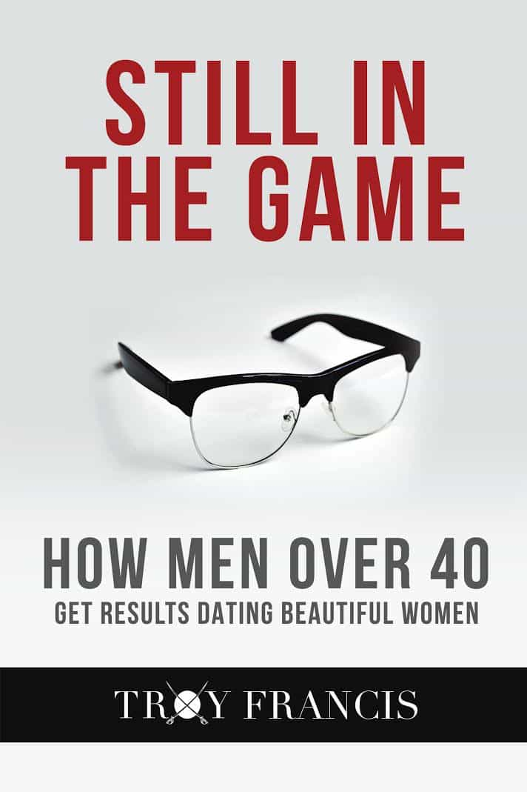

Troy is a game veteran of a decade's standing, and a lover of women, literature, travel and freedom. He is also the author of The Seven Laws of Seduction. Visit his website at Troy Francis.


The following article is sponsored by Troy Francis.
These days there is a plethora of advice about game and dating on the internet for men, but a great deal of it is written for and by guys in their twenties. This all good, and you can find some fantastic advice out there, but it doesn’t always fully address the issues and concerns of men who are over the age of forty.
For there are a great many men who have come back to the dating market following a divorce or the breakdown of a relationship. In many such cases there are children involved. Meanwhile there are other guys who have remained single, having been unnerved by the high divorce rate and its potential consequences.
While the basic levers of attraction remain the same however old you are, it’s simply not the case to pretend that pickup is exactly the same for a 40+ guy as it is for a kid in his twenties.
Here are five things that men in their forties need to know about game as they contemplate the new dating scene.
The first thing that 40+ guys—especially those who have been married or in long-term relationships—have to realise is that stepping outside ‘the matrix’ of what society deems is correct is OK. You just have to develop a strategy to free yourself from groupthink and act like an individual rather than a part of the herd.
A great many younger guys have taken this on board, and now the digital nomad lifestyle, plus non-monogamous dating are common for millennials.
For older guys who were brought up with a more conventional outlook, you need to find a way to smash past the voices in your head, disregard those around you and live as you’d really like to live.
That includes not just how you live and work, but also who you date and the kinds of relationships you’d like to have with women.
Face it, not all of us are cut out to be one-women guys with 2.4 kids and a white picket fence. Increasingly, many men are recognising that they don’t fit the mould and they are dying to break free.
The good news is that today you can have any lifestyle you want—the opportunities are endless—as long as you find ways to distance yourself from conventional thinking.
A lot of guys who are in their forties—and even younger—question whether it is still ‘ok’ for them to approach women. Game feels as though it is a younger man’s pastime.
And people are all too ready to try to shame men for continuing to have active sex lives by condemning a continued interest in women and approaching as somehow immature or shallow.
Of course this is a nonsense, since interpersonal relationships are among the most important things in our lives. And this doesn’t stop just because you were 39 yesterday and today you’re 40.
And since nearly all of the great art, literature, and music created by our species has had sex and love as its inspiration it is simply not in tune with human dynamics to brand these things as insignificant.
So yes, it is fine to still be approaching women when you are in your 40s—just as long as you do so with love, and you are coming from a positive place.
I don’t mean that in a hippyish, peace and love, bullshit kind of way. I mean that this is not a zero-sum game. You shouldn’t be going out and meeting girls with a view to ‘getting something from them’. No. This should be a win-win scenario where you bring your experience, maturity and intelligence to bear, and she enjoys spending time with you as much as you do with her.

Yes, we all want eternal youth, and yes, society, advertising and the culture in general all tell us that in order to be successful with women you need to look like a 25 year-old Abercrombie model.
While it’s true that all of us, whatever our age, should make every effort to stay in shape and look as good as we can, if you overdo it there’s a real chance you’ll end up looking like a dad dressed up as Justin Bieber.
Not a good look.
What you need to do instead is to spend some time thinking about yourself—your likes and your dislikes, your influences and so on—and then work out how best to channel these visually into what you wear.
It may sound a little pretentious to put it like that but seriously, it’s time well spent, because once you’ve worked through this process you will find yourself wearing clothes far more authentic to you.
If you need help with this it’s well worth booking some time with a personal shopper who specialises in menswear.
A lot of 40+ guys on the dating scene end up meeting girls who are younger than they are. Or they aspire to, at least.
While there’s nothing wrong with this, and the chemistry between a younger woman and a mature man can be electric, you have to face facts—she’s younger than you and her interests and cultural reference points will differ from yours.
Because of this many guys will overcompensate and try to pretend that they are twenty years younger by dropping in references to bands they’ve hardly heard of and TV shows they’ve never watched. While it’s good to keep your finger on the pulse of pop culture, you don’t want to risk looking like a fool.
You also must avoid going to the other extreme and become patronising, giving her instructions on how she should live her life.
Instead, drop your ego and learn to relate to her as another human being. You need to tune into the commonalities between you and concentrate on those. When you learn to do this effectively then any kind of ‘age gap’ will melt away.
My ex-girlfriend was fifteen years younger than me and I am currently dating a girl who is seventeen years younger. In both cases, my age was (and is) a non-issue, since I relate on a on a much more fundamental plane than that.
You can learn to do the same thing.

There’s no point in pretending that the player lifestyle is all milk and honey and endless beautiful girls. It’s not—there are definite negatives. Every decision that we make has consequences and no path is without its challenges.
It’s important that men who are in the 40+ age group bear this in mind before they leap into what they imagine will be a carefree life of pleasurable dating and intimacy.
At the same time, it is important that we resist those shaming voices that would claim that guys who are single into their forties will end up as ‘lonely old men’. This is absolutely not the case—I talk to men of all ages, including those in their sixties and even seventies, who are still dating and having a great time.
Don’t let imaginary mental barriers prevent you from living life your own way.

So, you reached forty. Or maybe you haven’t quite yet. But you’ll get there soon enough. And when you do—whether that’s now or in a couple of years’ time—you’ll need to know precisely what you need to do to get results with the girls you want to date.
Perhaps you’ve been married. Maybe you’re divorced, or a split looks imminent. Maybe you have kids. Maybe the dating scene is a dim and distant memory to you. Or perhaps you’ve been playing the field for a while, but you’d benefit from the experience and insights of a player in his forties who regularly dates beautiful girls all over the world.
After all, when you were at university it was all so easy—you’d simply have a few drinks, go to the bar and meet a girl. These days there is Tinder and Bumble and Happn, not to mention all the social networks like Facebook, Instagram and Snap. Everything seems so complicated.
Plus as a guy in his forties you’re still interested in the same kinds of girls you always were: hot young things with a bit of sass and feistiness. That picture of Emily Ratakowski in her bikini never fails to perk you up. And you don’t see things changing any time soon.
But where will you meet the kinds of girls you like? And how will you make it so that you’re attractive to them? And how will you relate to them? Most importantly, how will you get over the mental barriers that you will inevitably face as a 40+ guy out playing the field?
Still In The Game answers all these questions and more.
Let’s face it. There’s a ton of game advice out there but the vast majority of it is aimed at younger guys. And as Still In The Game makes clear, the principles of attraction are the same whatever your age. There are no silver bullets. But the main thing that holds guys in their 40s back from success is not so much game techniques as much as the mindsets that they hold.
If you can just make a few subtle tweaks to your mindset then you will immediately start to make huge leaps forward in your dating life. Still In The Game will teach you how.
Still In The Game by Troy Francis is available on Amazon for Kindle and in paperback now. To order your copy now click here.